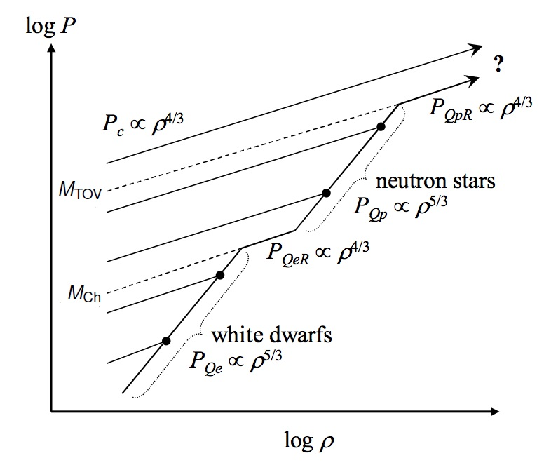

11 Recap on electron degeneracy pressure
We have seen that above the Chandrasekhar mass, electrons in a white dwarf become relativistic and electron degeneracy pressure \(P_{Q_e}\) is unable to balance the force of gravity to prevent further collapse.
Therefore the remnant continues to collapse to smaller radii and higher densities. In our diagram (Figure 13.2, also reported below for convenience), as the density \(\log\rho\) increases during further collapse, the central pressure due to gravity increases \(P_c\propto\rho^{4/3}\).

In Chapter 8 we mentioned that above the Chandrasekar mass limit the degeneracy pressure of electrons starts not being sufficient to keep the white dwarf from collapsing.
What about the protons?
12 Neutron stars formation
Remember that from the Heisenberg Uncertainty Principle all the confined particles have the same momentum, \(p\) (\(p\approx\hbar/\Delta x\)).
Since \(m_{\text{p}}/m_{\text{e}}\approx 1800\) and \(v = p/m\), the velocity of the protons will be about a factor of 1800 times less than that of the electrons.
So the protons are still non-relativistic. Their degeneracy pressure is still given by Equation 12.4: \[ \begin{equation} P_{\text{Qp}}=\frac{\beta}{2}\frac{\hbar^{2}}{m_{\text{p}}}\left(\frac{\rho}{m_{\text{p}}}\right)^{5/3}. \end{equation} \tag{12.1}\]
Since this pressure varies with density as \(\rho^{5/3}\), it will be able to balance the self-gravity at some point, and the contraction will halt again (but at some smaller radius and higher density than for a white dwarf).
In fact, this happens at such a high density that the electrons and protons will have undergone inverse beta decay (see Equation 10.3, electron capture process in Chapter 7): \[ \begin{equation} p^{+} + e^{-} \rightarrow n + v_{\text{e}}, \end{equation} \] merging to form neutrons. Thus, these stellar remnants are called neutron stars.
So in reality the stellar remnant is supported by degenerate neutrons. However, since electric charge plays no part in the process, and the mass of the neutron \(\approx\) mass of the proton, we can use expressions involving protons as an adequate substitute for neutrons.
13 Properties of neutron stars
We have shown that our equations for \(P_{\text{Qe}}\) and \(P_{\text{Qp}}\) are identical with the exception of particle mass \[ \begin{align} P_{\text{Qe}}&= \frac{\beta\hbar^{2}}{2m_{\text{e}}}\left(\frac{\rho}{m_{\text{p}}}\right)^{5/3},\\ P_{\text{Qp}}& = \frac{\beta\hbar^{2}}{2m_{\text{p}}}\left(\frac{\rho}{m_{\text{p}}}\right)^{5/3}. \end{align} \tag{13.1}\]
[Note that the \(\beta/2\) factor was introduced to generalise our original derivation of these quantities]
We can therefore re-use all our analysis from white dwarfs except with proton (\(\simeq\) neutron) degeneracy pressure instead of electron degeneracy pressure.
## Neutron star density
Remember that (from Equation 11.3) \[ \begin{equation} \rho_{\text{WD}}=\frac{4\pi}{3\beta^{3}}G^{3}\frac{m_{\text{e}}^{3}m_{\text{p}}^{5}}{\hbar^{6}}M^{2}.\nonumber \end{equation} \]
Therefore \[ \rho_{\text{NS}}=\left(\frac{m_{\text{p}}}{m_{\text{e}}}\right)^{3}\rho_{\text{WD}}=\frac{4\pi}{3\beta^{3}}G^{3}\frac{m_{p}^{8}}{\hbar^{6}}M^{2}. \tag{13.2}\]
## Neutron star radius
Similarly, since (from Equation 11.5) \[ \begin{equation} R_{\text{WD}}=\left(\frac{3}{4\pi}\right)^{2/3}\frac{\beta}{G}\frac{\hbar^{2}}{m_{\text{e}}m_{\text{p}}^{5/3}}M^{-1/3}, %\rho=\frac{M}{\frac{4}{3}\pi R^{3}}\nonumber \end{equation} \tag{13.3}\]
we again re-use all our analysis from white dwarfs, except with proton (\(\simeq\) neutron) degeneracy pressure instead of electron degeneracy pressure: \[ \begin{align} R_{\text{NS}}&=\frac{m_{\text{e}}}{m_{\text{p}}}R_{\text{WD}}\nonumber\\ &=\left(\frac{3}{4\pi}\right)^{2/3}\beta\frac{\hbar^{2}}{Gm_{\text{p}}^{8/3}}M^{-1/3}\nonumber\\ \nonumber \\ &\approx 1.2\times 10^{3}\left(\frac{M}{M_{\odot}}\right)^{-1/3}\,\text{m}\nonumber \end{align} \tag{13.4}\]
These expressions are fine for a rough estimate. A more complete treatment, including the nuclear forces which become relevant at these nuclear densities, gives densities about 1000 times lower and radii about 10 times larger.
- Real neutron stars of a few \(M_{\odot}\) have a radius of \(\sim 10\) km.
- The mass of the Sun in the size of Glasgow.

13.1 Summary of neutron star properties
- Mostly neutron-degenerate matter, with an outer “crust” of white-dwarf-like material (essentially a gigantic atomic nucleus).
- Supported by neutron degeneracy pressure.
- Much leftover gravitational energy from collapse, so extremely hot. \(T > 10^{6}\,\text{K}\) - glows white (and other important emission mechanisms as well: see later lectures).
- Extremely small: \(\sim 10^{4}\,\text{m}\).
- Absurdly high density: \(\sim 10^{17}\) to \(10^{18}\,\text{kg m}^{-3}\) (i.e. \(1\,\text{cm}^{3}\) of neutron star material weighs about a gigaton).
14 Limit of neutron star mass: he Tolman-Oppenheimer-Volkoff Mass Limit
Note that, just as in white dwarfs, the radius of a neutron star varies inversely with the cube root of its mass: \(R_{\text{NS}}\propto M^{-1/3}\)
This leads to a similar conclusion regarding the maximum possible mass for a neutron star: greater mass gives rise to reduced radius, higher density, greater particle confinement, and so eventually even the neutrons become relativistic.
The critical mass above which neutron degeneracy is unable to support the neutron star in a stable equilibrium is called the Tolman-Oppenheimer-Volkoff Mass Limit, \(M_{\text{TOV}}\).
Calculation of the value of \(M_{\text{TOV}}\) is a difficult problem, which requires General Relativity to describe the gravitational effects and an accurate Equation of State for the neutron-degenerate matter. The latter is still the subject of continuing astrophysical research. Consequently, \(M_{\text{TOV}}\) is still fairly imprecisely known, probably lying somewhere between 1.5 and 3.0 \(M_{\odot}\).
Measurement of the mass of the neutron star in PSR J0348+0432 \((2.01\pm 0.04)\)M\(_{\odot}\) puts a lower bound on \(M_{\text{TOV}}\).
Thus we can take \(M_{\text{TOV}} \approx 3.0M_{\odot}\) as the maximum neutron star mass.
Moving up in mass from neutron stars we come to black holes (see Chapter 11). The lightest known black hole is around \(5-10 M_{\odot}\).
This places an observational upper bound on the Tolman-Oppenheimer-Volkoff Limit.

- White dwarf equilibria occur where \(P_{\text{c}} = P_{\text{Qe}}\).
- Neutron star equilibria occur where \(P_{\text{c}} = P_{\text{Qp}}\).
- Above \(M_{\text{TOV}}\), no equilibria occur.
14.1 What happens to masses above \(M_{TOV}\)?
Initially, the \(P_{\text{c}}\) and \(P_{\text{QpR}}\) curves run parallel, so do not intersect. As the density increases, \(P_{\text{c}}\) actually starts to increase faster than \(\rho^{4/3}\), so the \(P_{\text{c}}\) curve diverges away from the \(P_{\text{QpR}}\) curve.
This occurs because of two relativistic effects.
1 The acceleration due to gravity is no longer given by just the familiar Newtonian formula,
\[ \begin{equation} g(r) = \frac{GM}{r^{2}}\nonumber \end{equation} \tag{14.1}\]
Instead, it is modified by General Relativity, becoming effectively \[ \begin{equation} g(r) = \frac{GM}{r^{2}}\frac{1}{\sqrt{1-R_{\text{S}}/r}}, \end{equation} \tag{14.2}\] where \(R_{\text{S}}\) is the Schwarzschild Radius.
The Schwarzschild Radius is given by \[ \begin{equation} R_{\text{S}}=\frac{2GM}{c^{2}}. \end{equation} \tag{14.3}\] So, as \(r\rightarrow R_{\text{S}}\), then \(g(r)\rightarrow \infty\), and so \(P_{\text{c}}\rightarrow \infty\).
- 2 As the particles become relativistic, we can effectively think of their masses increasing (Tolman). The particles still have the same rest mass but their total energy and momentum increase without bound.
- Tolman defined relativistic particle mass as \[ \begin{equation} m_{\rm rel} =\gamma m_{0}=\frac{m_{0}}{\sqrt{1-v^{2}/c^{2}}}\nonumber \end{equation} \tag{14.4}\]
- As the density of the remnant increases, the speeds of its constituent particles increase, so the relative particle masses increase. This causes a rise in the central pressure due to self-gravity, \(P_{\text{c}}\).
With \(P_{\text{c}}\) climbing unboundedly, no known physical process is able to halt the contraction. - From the perspective of an observer travelling alongside the collapsing mass (if such a thing was possible!), the remnant continues to collapse down to a singular point. - From the perspective of an external observer, the mass disappears from view when its radius falls below \(R_{\text{S}}\). - \(R_{\text{S}}\) is the radius of the event horizon. The object has become a black hole.
15 Observational Properties of Neutron Stars
15.1 How do we observe Neutron Stars?
- In principle, we can do the same as for white dwarfs. However, neutron stars are very small (\(\sim 10\) km), so have to be very hot for their thermal emission to be easily detectable.
- Instead, some of the properties of neutron stars result in them being more easily detectable by other means.
- These properties are:
- rapid rotation
- very strong magnetic fields
15.2 Rotation
A rotating object has angular momentum, \(L\), given by \[ \begin{equation} L=I\omega\nonumber \end{equation} \tag{15.1}\]
Here \(I\) is the moment of inertia and \(\omega\) is the angular velocity, i.e. \(\omega\) is the angle in radians through which an object rotates per unit time. If the rotation period is \(\tau\) then \(\omega = 2\pi/\tau\). \(I\) plays a similar role to the mass in linear momentum (compare \(p = mv\)).
The moment of inertia of a uniform sphere of mass \(M\), radius \(R\) is \[ \begin{equation} I=\frac{2}{5}MR^{2}. \end{equation} \tag{15.2}\]
Therefore, before its collapse to a neutron star, the core of a dying main sequence star will have an angular momentum \[ \begin{equation} L=\frac{2}{5}MR_{0}^{2}\omega_{0}=\frac{2}{5}MR_{0}^{2}\frac{2\pi}{\tau_{0}}. \end{equation} \tag{15.3}\]
Consider what happens during the collapse, looking at Figure 15.1.

- Angular momentum (and core mass) is conserved during the collapse, so after the neutron star forms it will have the same \(L\): \[ \begin{equation} L=\frac{2}{5}MR_{\text{NS}}^{2}\frac{2\pi}{\tau_{\text{NS}}}\nonumber \end{equation} \tag{15.4}\]
So the rotation period of the neutron star will be given by \[ \begin{align} \frac{R_{0}^{2}}{\tau_{0}}&=\frac{R_{\text{NS}}^{2}}{\tau_{\text{NS}}}\nonumber\\ \tau_{\text{NS}}&=\left(\frac{R_{\text{NS}}}{R_{0}}\right)^{2}\tau_{0}\nonumber \end{align} \tag{15.5}\]
- Suppose a typical dying star has a radius of \(\sim 10^{6}\) km and rotates once every \(\sim 30\) days i.e. \(\sim 3\times 10^{6}\) s. Then after collapsing to a neutron star of radius \(\sim 10\) km it will have a rotation period of \(t_{\text{NS}} \approx 0.0003\) s.
- So we have an object of about the mass of the Sun, and the size of a city, rotating over 3000 times every second.
15.3 Just how fast can a neutron star rotate?

The limit is defined by centripetal break-up – the rotation rate at which the centripetal force required to keep the outermost layer of the neutron star from flying off into space is just matched by the force of gravity (see Figure 15.2).
The centripetal acceleration of an object moving in a uniform circular path of radius \(R\) at angular velocity \(\omega\) is given by \[ \begin{equation} a=\omega^{2}R\nonumber \end{equation} \tag{15.6}\]
Therefore at the centripetal break-up limit, the required centripetal force \(F = ma\) on a particle of mass \(m\) on the surface of the neutron star will be just matched by the gravitational force acting on it: \[ \begin{align} m\omega^{2}_{\text{max}}R&=\frac{GMm}{R^{2}}\nonumber\\ \omega_{\text{max}}&=\sqrt{\frac{GM}{R^{3}}}.\nonumber \end{align} \tag{15.7}\]
Notice that the maximum angular velocity of Equation 15.7 depends on the square root of \(M/R^{3} \propto \rho\) - more dense objects can rotate faster!
So from Equation 15.7 we find that the minimum rotation period for a neutron star is \[ \begin{equation} \tau_{\text{min}}=\frac{2\pi}{\omega_{\text{max}}}=2\pi\sqrt{\frac{R^{3}}{GM}}.\nonumber \end{equation} \tag{15.8}\]
- A neutron star at the Tolman-Oppenheimer-Volkoff Mass Limit \(M_{\text{TOV}} \approx 3M_{\odot}\) and with a radius of \(\sim 10\) km will therefore have a minimum rotation period of \(t_{\text{min}} \approx 0.3\) milliseconds.
This rotation stores a vast amount of kinetic energy (like a colossal flywheel). The kinetic energy of a rotating body is given by \[ \begin{equation} E_{\text{rot}}=\frac{1}{2}I\omega^{2}\nonumber \end{equation} \tag{15.9}\]
- Compare this to the kinetic energy associated with linear motion, given by the familiar expression \((1/2)mv^{2}\).
- Hence the maximum rotational energy content of a neutron star will be given by \[ \begin{equation} E_{\text{max}}=\frac{1}{2}\frac{2}{5}M_{\text{TOV}}R^{2}\omega_{\text{max}}^{2}=\frac{1}{5}\frac{GM_{\text{TOV}}^{2}}{R}. \end{equation} \tag{15.10}\]
15.4 Example: The Crab Pulsar

- Evaluating the maximum value, we find \(E_{\text{max}} \approx 10^{46}\) J.
- For a typical neutron star (such as the Crab), \(E_{\text{rot}} \approx 10^{41}\) J.
- The most energetic nuclear weapon was \(\sim 10^{17}\) J.
15.5 Magnetic Fields
The plasma making up a collapsing stellar core and its environment is highly conducting: as a result, any magnetic field present is said to be frozen in to the plasma. If the material moves, the magnetic field lines move with it, and vice versa.
As a result, the magnetic flux through a surface element is conserved. Pictorially, the total number of magnetic field lines running through the surface will remain unchanged, even if you adjust the size of the surface. The spacing of the field lines gives a measure of the strength of the field: closer field line spacing = stronger magnetic field.
- Magnetic flux conservation gives us \(A_{1}B_{1} = A_{2}B_{2}\) (see Figure 15.4).
Most stars are believed to generate a (roughly) dipole magnetic field due to churning motion of the conducting material in their interiors. When a dying star collapses to form a neutron star, magnetic flux conservation results in the formation of regions of extremely strong magnetic field near the neutron star (see Figure 15.5).
- Taking conservation of magnetic flux through collapsing spherical surfaces, we find the final strength of the magnetic field of a neutron star in relation to the one it had before collapsing: \[ \begin{align} 4\pi R_{0}^{2}B_{0}&=4\pi R_{\text{NS}}^{2}B_{\text{NS}}\nonumber\\ B_{\text{NS}}&=\left(\frac{R_{0}}{R_{\text{NS}}}\right)^{2}B_{0}.\nonumber \end{align} \tag{15.11}\]
- Suppose we start with a dying star of radius \(10^{6}\) km and a global magnetic field of 0.001 T. After collapsing to a neutron star of radius 10 km, it will have a magnetic field of \(10^{7}\) T.
- This is incredibly strong: compare to the Earth’s magnetic field of about \(10^{-5}\) T, or the strongest lab magnets of about 10 T.
16 Pulsars
A neutron star has an extremely strong magnetic field, and can rotate extremely rapidly. Since the field is `frozen in’, it is also dragged round by the rotation.
Consider a stationary point in space just above the surface of a swiftly- rotating neutron star. The neutron star’s magnetic field will rapidly sweep past this point as it rotates, i.e. locally there will be a rapidly time-varying magnetic field.
A time-varying magnetic field gives rise to an electric field (Faraday’s Law: \(dB/dt\) gives \(E\) ). Therefore, there will be a strong electric field above the neutron star’s surface.
The strong electric field accelerates charged particles to extremely high (relativistic) velocities.
The plasma physics of this situation is highly complicated and not completely understood. However, the general outcome is the production of strong beams of electrons, which stream out from the neutron star’s magnetic poles, where the field is strongest (see Figure 16.1 and Figure 16.2).
The particles travel along the (curving) magnetic field lines. These accelerating charges emit (non-thermal) curvature radiation (mostly radio waves). Since they are travelling at relativistic speeds, relativistic beaming occurs (i.e. the `headlamp effect’). Strong beams of radiation are produced in the direction of the electrons’ travel, i.e. along the magnetic axis of the neutron star.
We observe similar beaming, on a vastly larger scale, in jets from active galactic nuclei (see ItC lectures) and black holes (see Chapter 11).

If the magnetic axis is inclined to the rotational axis of the neutron star, these beams of radiation will sweep through space like the beams of light from a lighthouse as in Figure 16.3.
- If an observer happens to be located such that one of these beams points directly towards them at some point in the neutron star’s rotation, they will see a flash of radiation once per rotation as the beam sweeps past. These pulses of radiation give rise to the name of this phenomenon: a pulsar.
- Pulsars are extremely regular (as accurate as atomic clocks), and are observed to have periods of milliseconds to seconds. Millisecond pulsars are rotating faster than the centrifugal break-up limit of white dwarfs (\(t \approx 0.5\) s), so they must be neutron stars.
16.1 Changes in pulsar period
The pulses of radiation from a pulsar are extremely regular in the sense that they are highly predictable. However, they do not arrive at a perfectly constant rate. The pulse rate is observed to decline slowly.
Suppose the rate of change of the pulse period \(P\) with time is \[ \begin{equation} \frac{dP}{dt}=\dot{P}.\nonumber \end{equation} \tag{16.1}\]
Then we can define the characteristic spin-down time \(t_{\text{s}}\) as the length of time it would take for the pulsar’s rotation to cease, if its current rate of decline continued unchanged: \[ \begin{equation} t_{\text{s}}=\frac{P}{\dot{P}}\nonumber \end{equation} \tag{16.2}\]
For observed pulsars, \(t_{\text{s}}\) is measured to be \(\sim 10^{4}\) to \(10^{7}\) years.
16.1.1 \(P-\dot{P}\) diagram
Plotting the period \(P\) and spindown \(\dot{P}\) of pulsars (Figure 16.4) reveals features of their population.
- Newly-born pulsars have \(P\sim 1\,\)ms and large spindowns \(\dot{P}>10^{-13}\,\) s/s.
- Most pulsars have \(0.1<P<1\,\)s and \(\dot{P}\sim 10^{-15}\)s/s as they have been spinning down for a long time.
- Recycled pulsars have short periods but very low spindowns (bottom left). They were spun up by mass transfer from a binary companion.
16.1.2 Why do pulsars spin down?
- For isolated pulsars, the only source of energy is that stored in the “flywheel” energy reservoir of their rotation. Energy is carried away by the pulsar’s emission of radiation - this has to come from the store of rotational energy, which will gradually be exhausted, leading to progressively slower rotation.
- Hence we might expect that all pulsars older than about 10 million years should have spun down to a halt, and no longer emit their characteristic pulsar beams.
- Short period (millisecond) pulsars would then also have to be very young, and should still be surrounded by their supernova remnants, e.g. the Crab pulsar, with \(t = 33\) ms, embedded in the Crab Nebula supernova remnant (see previous chapter).
- But we do observe older millisecond pulsars without any supernova remnant.
Why haven’t they spun down to much longer rotation periods?
- These pulsars are (or were until recently) part of an accreting binary system. The accretion flow transfers angular momentum to the pulsar, causing it to spin-up to near the centrifugal break-up limit. Such objects are known as re-cycled pulsars.
16.2 Case study: the “Double Pulsar” system, PSR J0737-3039

Two pulsars, A and B, in a binary system of orbital period 2.4 hrs. \[ \begin{align} A:&\,M=1.34M_{\odot},\,\tau=23\,\text{ms}\nonumber\\ B:&\,M=1.25M_{\odot},\,\tau=2.8\,\text{s}\nonumber \end{align} \]
Star A went supernova first and formed a long period (\(\sim\) seconds) pulsar. As time progressed, star B aged and proceeded to the giant phase. An accretion stream formed from star B to pulsar A, transferring angular momentum and spinning-up pulsar A to a short (\(\sim\) milliseconds) rotation period. Star B then went supernova, forming a long period (\(\sim\) seconds) pulsar.
Fortuitous alignment means that from Earth we see both neutron stars as pulsars. The system is also almost exactly edge-on, and so features eclipses. Occultation and scattering of one pulsar’s beam by the other pulsar gives us a rare insight into the plasma conditions near the pulsars and should help us investigate the pulse emission mechanism. Orbital measurements also provide extremely precise tests of General Relativity.
PSR J0737-3039 is an almost perfect astrophysics laboratory!